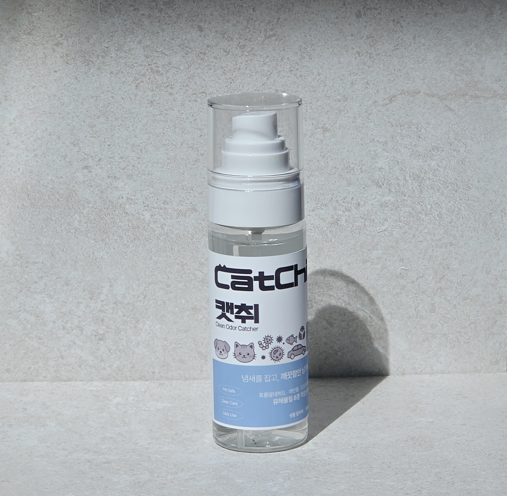
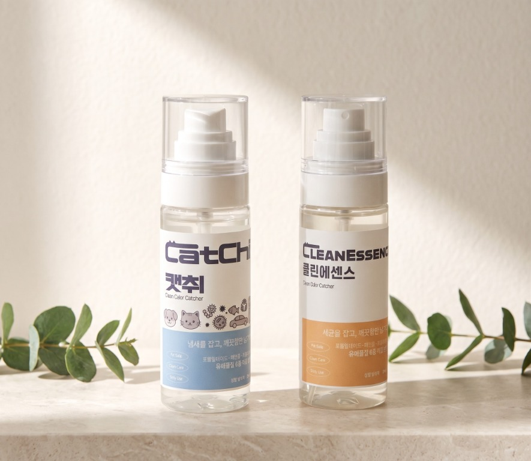
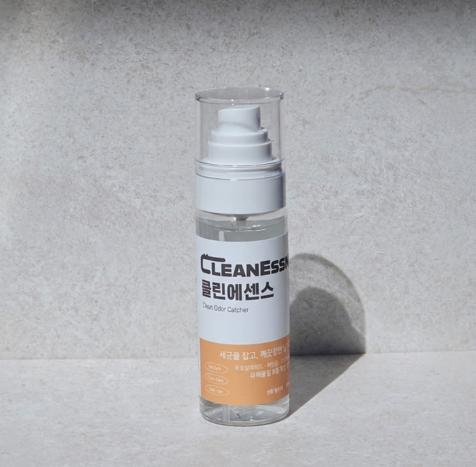

01 CYPRESS OILFRESH · WOODY
캣취 CATCHI
편백오일의 맑고 차분한 숲 향으로
공간을 산뜻하게 케어해요.
주요 사용 물질 정제수 · 삼백초추출물 · 아세트산 · 편백오일
A FRESHER EVERYDAY, NATURALLY
매일 머무는 공간에 필요한 작은 변화.
자연에서 온 편안한 향과 꼼꼼한 기준으로
JEBIO가 일상의 냄새를 산뜻하게 케어합니다.

CATCHI · CLEANESSENCEA LITTLE MORE CONSIDERATE
익숙한 공간이 더 기분 좋은 곳이 되도록. JEBIO는 매일 쓰는 제품일수록 성분과 기준을 세심하게 살피고, 공간에 자연스럽게 어울리는 향을 고민합니다.
TWO MOODS, ONE EVERYDAY CARE
같은 꼼꼼한 케어, 다른 기분.
좋아하는 향으로 공간을 채워보세요.

01 CYPRESS OILFRESH · WOODY
편백오일의 맑고 차분한 숲 향으로
공간을 산뜻하게 케어해요.

02 YUJA SCENTBRIGHT · CITRUS
유자의 산뜻하고 포근한 향으로
일상의 공간을 기분 좋게 채워요.
필요한 곳 어디든, 일상의 공간에
MADE WITH CARE, CHECKED WITH CARE
캣취와 클린에센스는 안전확인대상생활화학제품으로 승인받았으며, 포름알데히드·메탄올·프탈레이트 등 유해물질 8종 시험에서 적합 판정을 받았습니다.
※ 제품의 표시사항 및 사용상 주의사항을 확인한 후 사용해 주세요. 인체나 동물에 직접 분사하지 마세요.
A FRESHER FEELING, EVERY DAY
JEBIO 제품을 사용해 주신 고객님들의 소중한 후기입니다.
차량에 두고 사용하기 편하고, 분사력이 좋아요.
냉장고 탈취나 실내 탈취용으로 사용하기 편리하고, 유자 향이 은은해서 마음에 들어요.
성분을 믿고 사용합니다. 필요시 가볍게 사용하기 편합니다.
A FRESH START, RIGHT WHERE YOU ARE